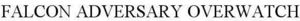

Trade Mark Journal No.2025/010 7 March 2025
WO0000001826220 (42)
Office of origin: United States of America
Date of International Registration:15 August 2024
Date of designation in the UK:
15 August 2024

International priority date claimed: 14 August 2024
(United States of America)
(98697995)
- Class 42
- Computer security consulting; consulting in the field of information technology; computer security consultancy services for protecting data and information from unauthorized access in the field of computer and network security, identifying malware on computer systems, identifying the source and genealogy of malware, and identifying the objectives of computer system attacker; computer security consultancy in the field of scanning and penetration testing of computers and networks to assess information security vulnerability; computer security consultancy for protecting data and information from unauthorized access, namely, developing plans for improving computer and network security and preventing criminal activity; cloud computing featuring software for use in computer and network security; cloud computing services in the field of computer and network security; computer security services by online scanning, detecting, quarantining, and eliminating of viruses, worms, Trojans, spyware, adware, malware and unauthorized data and programs on computers, networks, and electronic devices; computer systems analysis; monitoring of computer systems for protecting data and information from unauthorized access; computer security consultancy for protecting data and information from unauthorized access and computer technology consulting of systems for the surveillance and monitoring of vulnerability and security problems in computer hardware, networks, and software; computer security consultancy for protecting data and information from unauthorized access in the field of endpoint protection software or curated cyberthreat data for computer security assurance and identification of malicious intrusions into computers, computer networks or computer endpoints; software as a service (SaaS) services featuring software for computer and network security; software as a service (SaaS) services, namely, hosting software for use by others for detecting, blocking, and removing computer viruses and threats; application service provider (ASP) featuring non-downloadable computer software for use in computer and network security; electronic monitoring services for advanced computer threat detection using real-time monitoring and machine learning to detect computer threats and viruses, and for providing detailed analysis and contextual intelligence to inform responses to sophisticated computer threats; monitoring and investigation of bad actors and adversaries across computer networks to neutralize emerging computer threats and improve cybersecurity and computer network security.
CrowdStrike, Inc.
Representative: Haseltine Lake Kempner LLP, Fountain House, 4 South Parade Leeds LS1 5QX UNITED KINGDOM